„Wer ist eigentlich dran?"
Die Uhr läuft für die Person am Zug, nicht für die Runde. Ein Tipp, und sie geht weiter. Auf dem Sperrbildschirm sieht man es auch dann, wenn das Telefon auf dem Tisch liegt.
Timatch führt die Uhr am Tisch, rechnet die Punkte zusammen und merkt sich, was ihr gespielt habt — wer dran war, wie lange gedacht wurde und wer am Ende vorn lag.
Beide Fassungen sind in der Beta — die App kommt bald in den App Store, Timatch Web später in den Play Store.
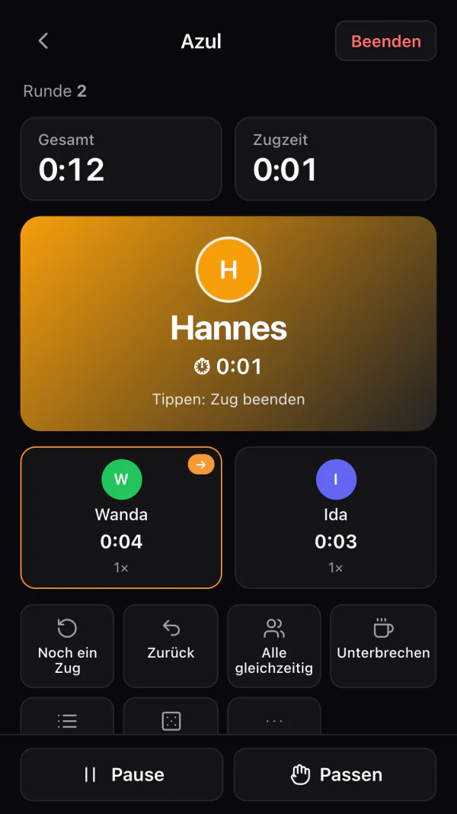
Timatch beantwortet sie, bevor jemand sie stellen muss.
Die Uhr läuft für die Person am Zug, nicht für die Runde. Ein Tipp, und sie geht weiter. Auf dem Sperrbildschirm sieht man es auch dann, wenn das Telefon auf dem Tisch liegt.
Der Punktezettel kennt die Zeilen deines Spiels und addiert sie selbst. Gleichstand wird erkannt, und auch Spiele, bei denen die niedrigste Zahl gewinnt.
Deine Sammlung mit Titelbildern, Spielerzahl und Dauer — und der ganze Verlauf dazu. Nach zwei Jahren weißt du noch, wann ihr Ark Nova zuletzt auf dem Tisch hattet.
Gesamtzeit, Zugzeit-Limit oder eine echte Schachuhr mit Zeitkonto je Person. Reihum oder frei — und wenn alle gleichzeitig planen, läuft die Zeit für alle zugleich.
Restzeit auf einen Blick — beim Zugzeit-Limit, beim Zeitkonto und auf jedem Gerät, bis zur Apple Watch.
Fünf Minuten und eine Minute vor Ablauf ein kurzer Ton samt Vibration — im Hintergrund als Mitteilung.
Wer dran ist, steht auf dem Sperrbildschirm — auch wenn das Telefon nur auf dem Tisch liegt.
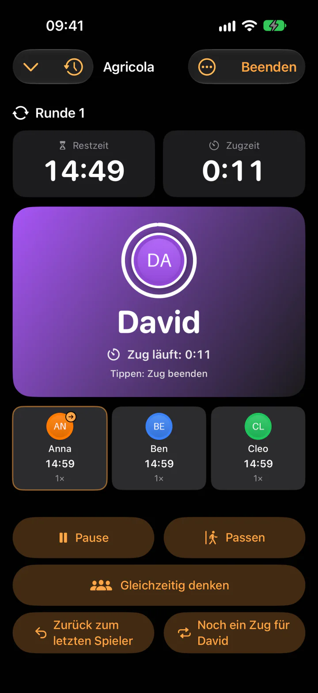
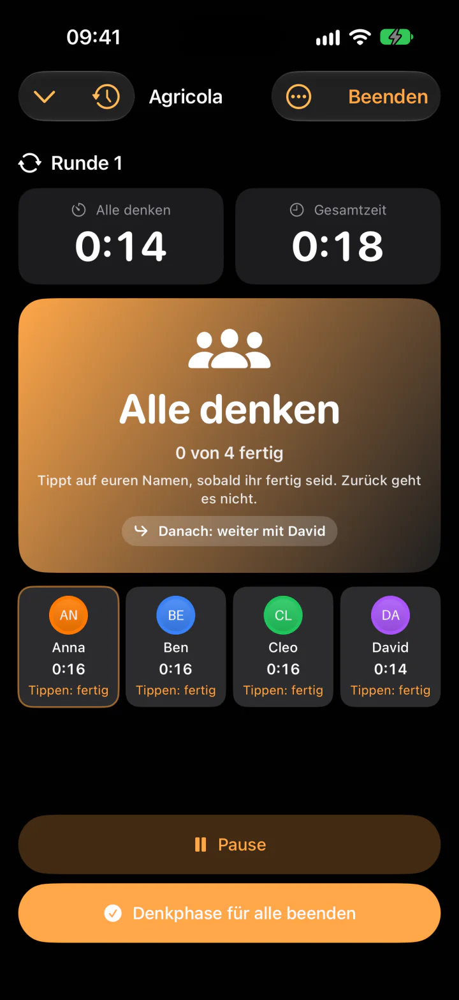
Bei Zeitüberschreitung, sekundengenau oder je angefangener Minute — mit Ausnahmen für Kinder und Neulinge.
Ein Neustart, ein leerer Akku, ein Absturz: Die Partie läuft weiter, wo sie war — auf die Sekunde.
Würfel, Münze, Losen und Sanduhr — für alles, was sonst unters Sofa rollt.
Bei Azul genügt eine Zahl. Bei Agricola rechnet man Felder, Weiden, Vieh, Ställe und Bettelkarten zusammen — und verrechnet sich. Also legst du die Zeilen einmal an, und Timatch fragt sie ab, addiert sie selbst und kürt am Ende die Siegerin.
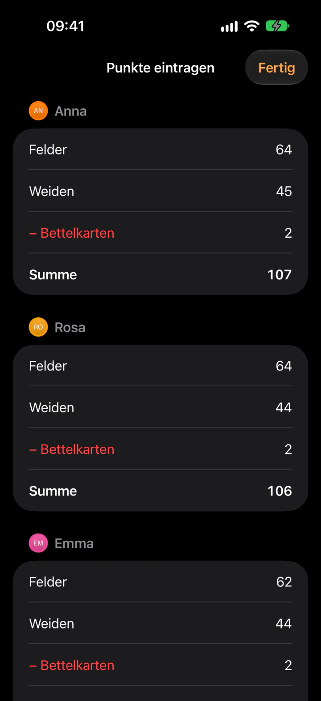
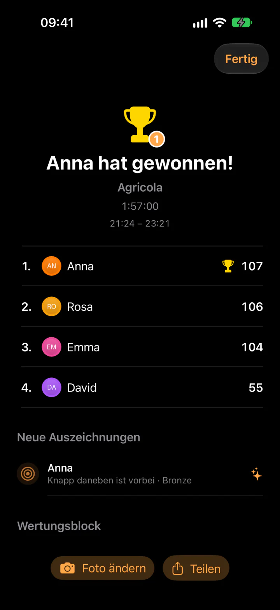
Timatch ist fürs iPhone Duo gebaut, nicht bloß hochgezogen. Zugeklappt eine handliche Tischuhr. Aufgeklappt der Duo-Tisch: die Person am Zug groß mit dem Zeit-Ring, daneben die ganze Runde mit Zeiten und Zügen — alle auf einen Blick, ohne Scrollen.
Halb aufgestellt wie ein kleiner Laptop: oben die Person am Zug, unten Runde und Knöpfe. Das Scharnier bleibt frei.
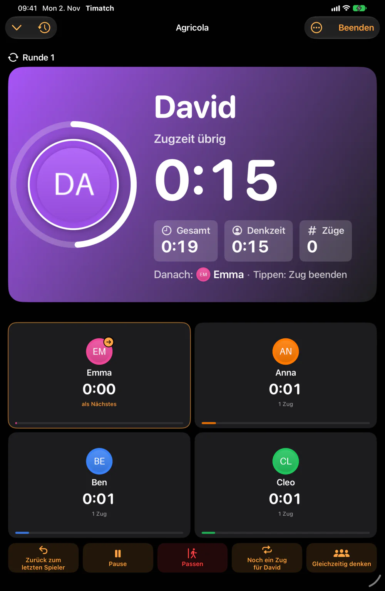
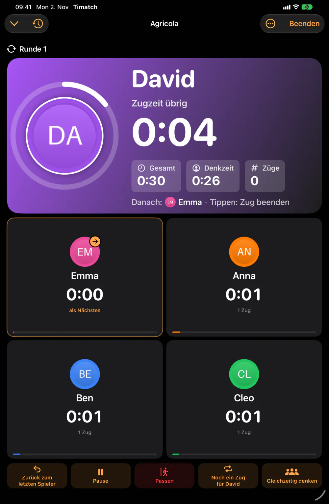
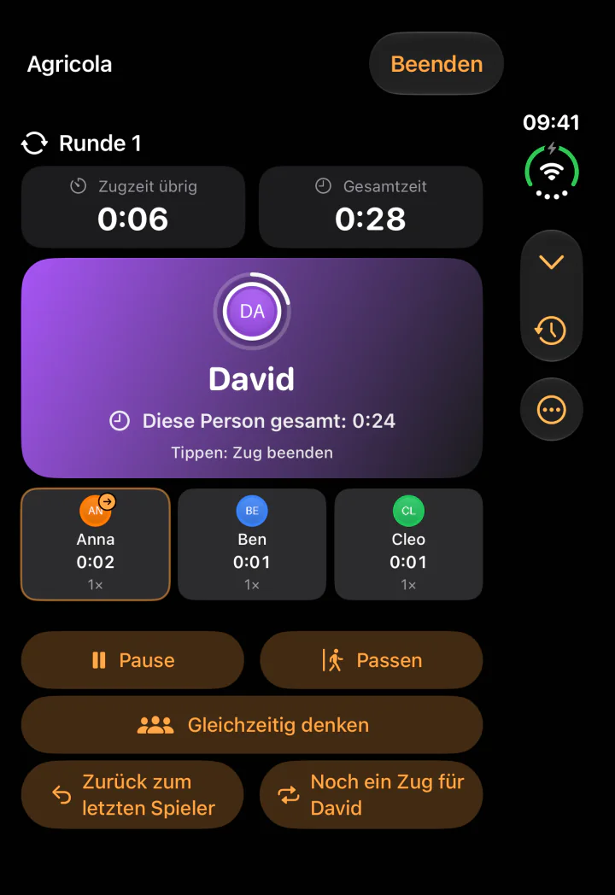
Spiele von Hand anlegen oder über BoardGameGeek übernehmen — einzeln oder die ganze Sammlung über deinen Nutzernamen. Timatch rechnet aus euren Partien, nicht aus fremden Durchschnitten.
Erweiterungen am Grundspiel, Wunschliste, eigene Bewertung und Tags.
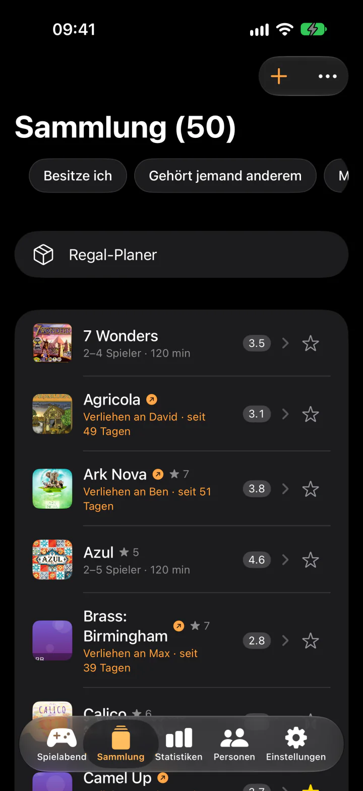
Siegquoten, Rekorde und Auszeichnungen je Person, die echte Spieldauer nach Spielerzahl.
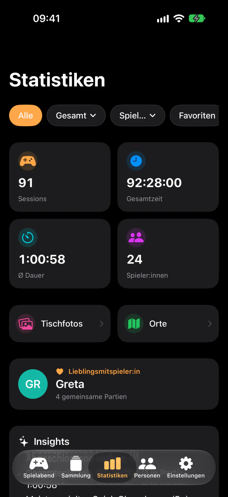
Rechnet aus, was in dein Kallax tatsächlich hineinpasst.
Meiste Siege, höchste Punktzahl, größter Vorsprung — und 17 Auszeichnungen zum Sammeln.
Ein Vorschlag nach Rundengröße, Zeit und Lust — jedes Mal mit Begründung. (Pro)
Alles im Preis enthalten — keine getrennte App, kein zweiter Kauf.
Der Tisch. Timer, Punkte, Sammlung — dazu Live Activity, Widgets und Siri: „Wer ist dran?"
Zugeklappt Tischuhr, aufgeklappt der Duo-Tisch mit allen Personen auf einen Blick.
Groß in der Mitte des Tisches — oder als zweites Display, wenn kein Apple TV da ist.
Deine Zugzeit am Handgelenk, mit Zeit-Ring und einem Klopfen, wenn du dran bist.
Der Spielstand groß für alle am Tisch, gesteuert vom iPhone. Ohne Apple TV per AirPlay oder Kabel.
Timatch Web: derselbe Spieltisch als Web-App — installieren, offline, ohne Konto.
Die App für Apple-Geräte und Timatch Web für Android und jeden Browser folgen denselben Regeln, gleichen sich über das Timatch-Konto ab und reichen sich laufende Partien weiter. Was wo geht, ehrlich aufgelistet.
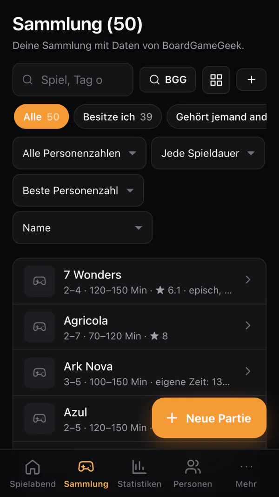
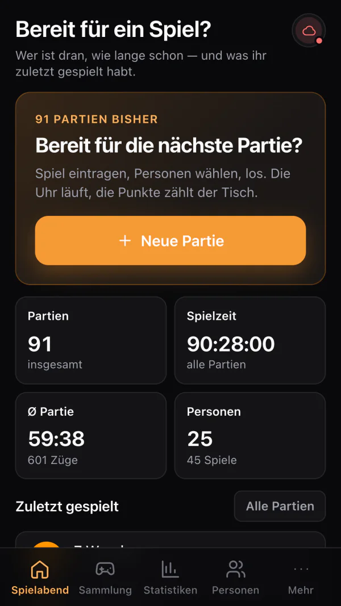
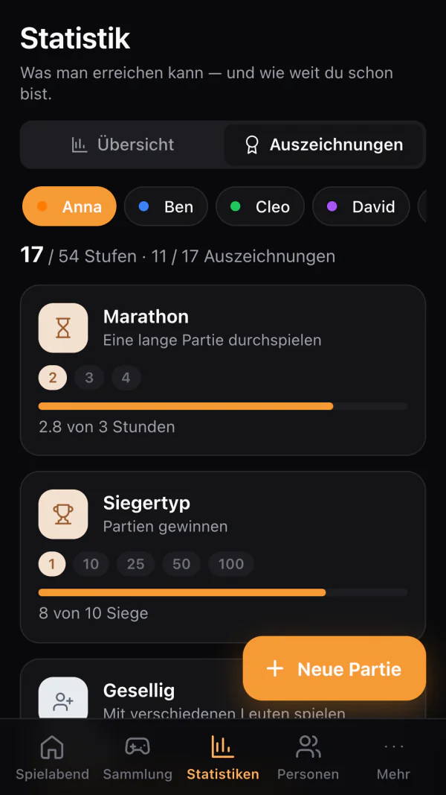
| Funktion | TimatchiPhone · iPad · Duo · Watch · TV | Timatch WebAndroid · Browser |
|---|---|---|
| Timer | ✓Zugzeit-Limit, Countdown, Schachuhr, freie Reihenfolge, Zeit-Ring | ✓Zugzeit-Limit, Countdown, Schachuhr, freie Reihenfolge |
| Zeitregeln | ✓Strafpunkte, Ausnahmen, Denkphase, Unterbrechung, Teams | ✓Strafpunkte, Ausnahmen, Denkphase, Unterbrechung, Teams |
| Punkte | ✓Wertungsblöcke, Runden, Minus-Zeilen, Zug-Verlauf | ✓Wertungsblöcke, Runden, Minus-Zeilen, Zug-Verlauf |
| Gedächtnis | ✓Personen, Statistik, Rekorde, Auszeichnungen, alle Partien mit Suche | ✓Personen, Statistik, Rekorde, Auszeichnungen, alle Partien mit Suche |
| Sammlung | ✓BoardGameGeek, Verleih, Regal-Planer | ✓BoardGameGeek, Verleih, Regal-Planer |
| Tisch-Display | ✓Apple TV, iPad, AirPlay oder Kabel, jeder Browser per Code | ✓Jeder Browser per Code, Chromecast |
| Tisch-Helfer | ✓Würfel, Münze, Losen, Sanduhr | ✓Würfel, Münze, Losen, Sanduhr |
| Abgleich | ✓iCloud und Timatch-Konto (Mail, Apple, Google) | ✓Timatch-Konto (Mail, Apple, Google) oder Cloud-Sicherung mit Code |
| Partie übergeben | ✓iPhone ↔ iPhone im WLAN, an Timatch Web per QR-Code, Text oder Datei | ✓Per QR-Code, Text oder Datei — auch an die iPhone-App |
| KI | ✓Auf dem Gerät, ohne Konto und ohne Schlüssel | ✓Mit eigenem Claude- oder ChatGPT-Schlüssel |
| Apple Watch, Live Activity, Widgets, Siri | ✓Zugzeit am Handgelenk, Sperr- und Home-Bildschirm, „Wer ist dran?" | — |
| iPhone Duo | ✓Eigener Duo-Tisch, zugeklappt Tischuhr | — |
| Punktezettel fotografieren | ✓Apple Intelligence liest den Zettel (iOS 27) | — |
| Läuft überall | — | ✓Installieren, offline, Android und Desktop |
Timatch braucht kein Konto und keine Anmeldung. Es gibt kein Analyse-Werkzeug in der App und keine Werbe-Kennung. Auf unserem Server landen eure Spieleabende nur, wenn du selbst ein Konto anlegst.
Sammlung, Personen und Partien liegen lokal. Wer will, gleicht über die eigene iCloud oder das freiwillige Timatch-Konto ab — beides abschaltbar.
Kein Login, keine E-Mail-Adresse, keine Registrierung nötig. Die App startet und ist da — auch die Web-Version. Ein Konto für mehrere Geräte ist freiwillig.
Ins Netz geht Timatch nur für das, was du selbst anstößt: BoardGameGeek, Karten, Tisch-Display oder dein Konto.
Alles lässt sich als Datei exportieren und wieder einlesen — auch, um wegzugehen.
Sammlung, Partien, Punkte und Statistik kosten nichts. Pro schaltet die Tiefe frei, die Vielspieler:innen sich wünschen.
Preise in Euro inkl. MwSt. Der Kauf läuft über den App Store; Abos verlängern sich automatisch, solange sie nicht mindestens 24 Stunden vor Ablauf gekündigt werden. Alle drei Varianten gelten mit Familienfreigabe. Einige Pro-Funktionen sitzen im Kenner-Modus — einem Schalter in den Einstellungen, der die selteneren Werkzeuge einblendet. Timatch Web (Android & Browser) ist in der Beta komplett kostenlos. Pro hängt an deinem Timatch-Konto — wer App und Web nutzt, kauft nur einmal.
Ja. Timatch Web läuft unter app.timatch.de in jedem aktuellen Browser – auf Android, Windows, Mac, Linux und auch auf dem iPhone. Ohne Installation und ohne Konto; wer mag, installiert es wie eine App auf dem Startbildschirm.
Timatch Web ist in der Beta komplett kostenlos. In der App für iPhone, iPad, Apple Watch und Apple TV sind Sammlung, Partien, Punkte und Statistik kostenlos; Timatch Pro kostet 1,99 € im Monat, 14,99 € im Jahr oder einmalig 34,99 €.
Ja, über Timatch Web im Browser. Auf Android lässt es sich über das Browser-Menü als App installieren und funktioniert dann auch offline. Eine Fassung im Play Store folgt.
Ja, mit eigener Ansicht. Zugeklappt ist Timatch eine handliche Tischuhr, aufgeklappt ein Spieltisch mit allen Personen auf einen Blick – flach, wie ein Buch gehalten oder halb aufgestellt wie ein kleiner Laptop.
Ja. Neben Zugzeit-Limit und Gesamtzeit gibt es eine Schachuhr: Jede Person bekommt ein eigenes Zeitkonto, das nur in ihrem Zug abläuft. Dazu kommen Passen, Runden, gleichzeitige Denkphasen und Strafpunkte bei Zeitüberschreitung.
Nein. Timatch funktioniert ohne Anmeldung, die Daten bleiben auf deinem Gerät. Ein freiwilliges Timatch-Konto gleicht Partien, Personen und Spiele zwischen App und Browser ab – ganz ohne Passwort.
Ja. Timatch übernimmt deine Sammlung über deinen BoardGameGeek-Namen oder eine BGG-CSV-Datei, samt Spielerzahl, Spieldauer und Bild.
Mehr Antworten in der Hilfe zur App und der Hilfe zu Timatch Web — oder schreib an support@timatch.de.
Im Browser in zehn Sekunden startklar — oder als App für iPhone, iPad, iPhone Duo, Apple Watch und Apple TV.